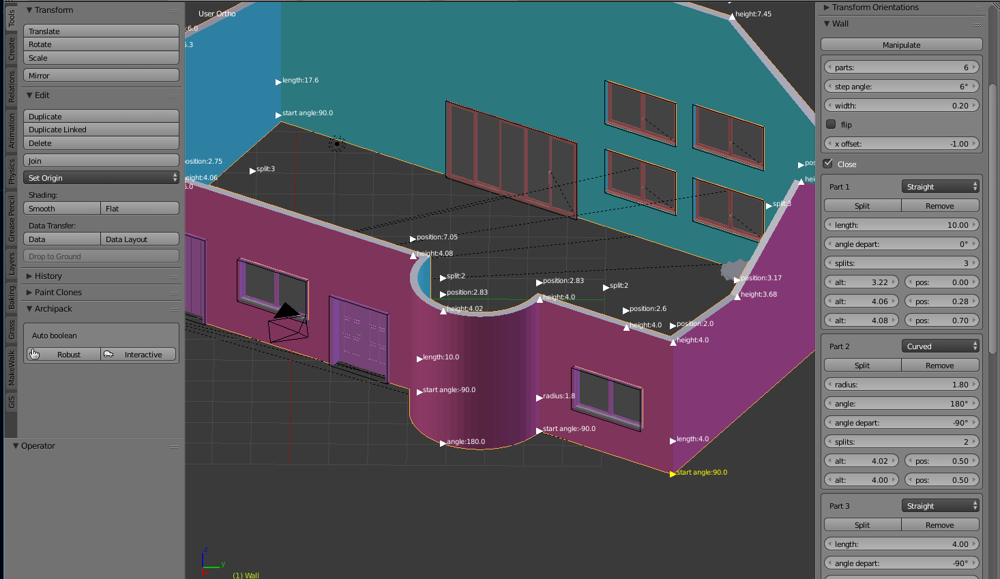
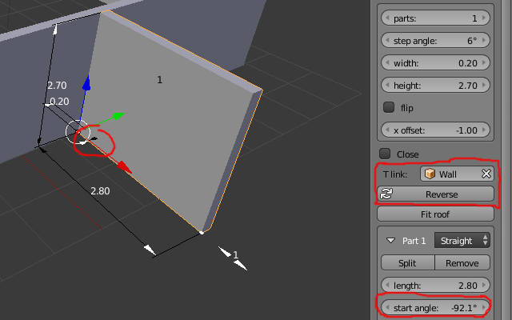
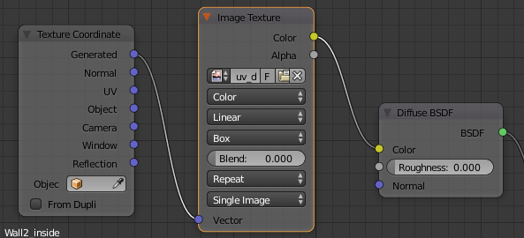

Wall
- Each segment may have up to 32 height changes
- Support straight and curved walls
- Any angle between segments
- Draw wall with snap
- Flexible snap manipulator
- Once auto-boolean done, wall manipulators take care of moving surrounding doors and windows according your changes
- Auto-align and resize surrounding doors and windows according wall depth
- Manipulators for easy on screen edition
- Wall T childs (1.2.7+)
- Fit to roof (1.2.7+) automatically fit wall to surroundig roof.
Important note:
Archipack provide 2 kinds of walls - Wall made with 2d to 3d tool, where only height may be changed, but able to handle complex shapes. - Full parametric wall made with add Archipack tools, documented here.

T childs walls (1.2.7+)

T childs walls are T walls linked to parent wall.
When manipulating parent wall, T child will follow according.
Setup a T child
There is 2 way to setup T child:
Using "draw a wall" tool, with mouse over parent wall when starting to create your "child" wall, the tool detect parent wall and provide regular snapping features to allow precise orientation of child with respect to parent.
With an allready made wall, having child wall's pivot near parent (use "reverse" if your pivot is in the wrong side) then in child's wall parameters, choose parent in "T link"
T child orientation with respect to parent
In order to orient child, use the part's 1 "start angle" parameter, where -90 make child outside of wall and 90 inside.
Moving T child
You may move the child, as long as it's pivot stay close from parent.
In order to translate child along parent, there is a dedicated manipulator with 2 small arrows where T child touch parent wall. This manipulator take care of moving T child windows and doors according.
Textures
Typical node setup for texture under cycles

Materials
Currently wall mesh is based on solidify modifier, wich imply some limitations regarding materials.
In order to be able to setup different materials to parts, you have to apply the solidify modifier, (labelled "Wall") and then use regular blender modelling on the wall.
Any parameter change on the wall will result in loosing changes done this way.
User guide
Find wall on the left panel of 3d view, Create->Archipack under regular primitives
You may either create a wall and edit on screen or use "Draw a wall" create tool.